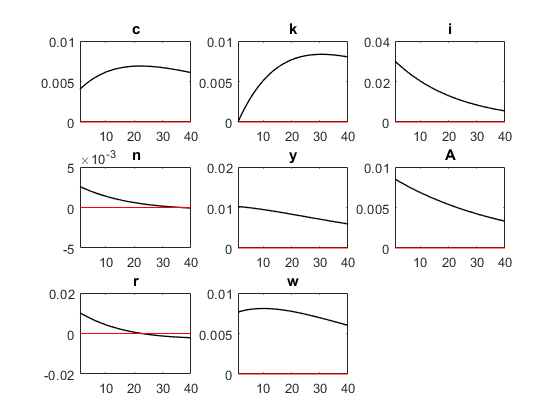
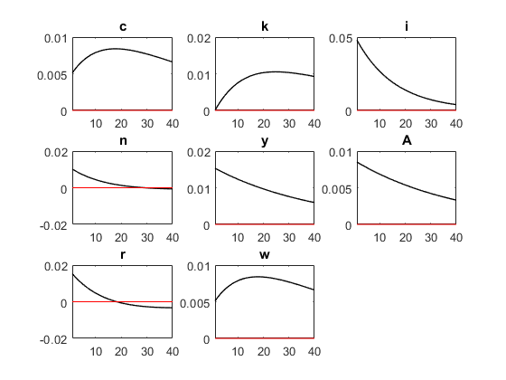

Contents
clear all; close all;
set workind directory
cd C:\Users\Nmath_000\Documents\MATLAB\dynare\work
calculate steady states for parms
parms = csvread('C:/Users/Nmath_000/Documents/MI_school/macro 607/part 2/hw2_parms.csv', 1)
beta_i = .99
delta_i = .025
alpha_i = (1/3)
v_i = .72
rho_i = parms(1,1)
sigmae_i = parms(1,2)
A_ss = 1
N_ss_i = (1/3)
K_ss_i = (((1/beta_i) - (1-delta_i))/alpha_i)^(1/(alpha_i - 1))*N_ss_i
I_ss_i = delta_i*K_ss_i
C_ss_i = (K_ss_i^alpha_i)*(N_ss_i)^(1-alpha_i) - I_ss_i
Y_ss_i = K_ss_i^(alpha_i)*N_ss_i^(1-alpha_i)
r_ss_i = alpha_i*A_ss*(K_ss_i^(alpha_i - 1))*(N_ss_i^alpha_i)
w_ss_i = (1 - alpha_i)*A_ss*(K_ss_i^alpha_i)*(N_ss_i^(alpha_i))
chi_i = (((1-alpha_i)*K_ss_i^alpha_i)/C_ss_i)*(1/3)^(-1*((1/v_i)+alpha_i))*A_ss
parms =
0.9761 0.0085
beta_i =
0.9900
delta_i =
0.0250
alpha_i =
0.3333
v_i =
0.7200
rho_i =
0.9761
sigmae_i =
0.0085
A_ss =
1
N_ss_i =
0.3333
K_ss_i =
9.7548
I_ss_i =
0.2439
C_ss_i =
0.7833
Y_ss_i =
1.0272
r_ss_i =
0.0506
w_ss_i =
0.9877
chi_i =
12.0617
Running Dynare simulation
dynare pt2_607h2_dynare
fullFileName = strcat('C:\Users\Nmath_000\Documents\MI_school\macro 607\part 2\plots\pt2_hw2_ir_plot.png')
saveas(gcf, fullFileName)
sim_data = transpose(oo_.endo_simul);
Configuring Dynare ...
[mex] Generalized QZ.
[mex] Sylvester equation solution.
[mex] Kronecker products.
[mex] Sparse kronecker products.
[mex] Local state space iteration (second order).
[mex] Bytecode evaluation.
[mex] k-order perturbation solver.
[mex] k-order solution simulation.
[mex] Quasi Monte-Carlo sequence (Sobol).
[mex] Markov Switching SBVAR.
Using 64-bit preprocessor
Starting Dynare (version 4.5.3).
Starting preprocessing of the model file ...
Found 8 equation(s).
Evaluating expressions...done
Computing static model derivatives:
- order 1
Computing dynamic model derivatives:
- order 1
Processing outputs ...
done
Preprocessing completed.
STEADY-STATE RESULTS:
c -0.244191
k 2.27776
i -1.41112
n -1.09861
y 0.0268443
A 0
r -3.34952
w 0.719992
MODEL SUMMARY
Number of variables: 8
Number of stochastic shocks: 1
Number of state variables: 3
Number of jumpers: 4
Number of static variables: 3
MATRIX OF COVARIANCE OF EXOGENOUS SHOCKS
Variables e
e 0.000072
POLICY AND TRANSITION FUNCTIONS
c k i n y A r w
Constant -0.244191 2.277757 -1.411122 -1.098612 0.026844 0 -3.349524 0.719992
i(-1) 0.014087 0.025000 -0.019531 -0.003341 0.006106 0 -0.018894 0.009447
k(-1) 0.549408 0.975000 -0.761723 -0.130302 0.238132 0 -0.736867 0.368434
A(-1) 0.464518 0 3.453619 0.297059 1.174161 0.976121 1.174159 0.877100
e 0.475882 0 3.538105 0.304326 1.202884 1.000000 1.202883 0.898557
MOMENTS OF SIMULATED VARIABLES
VARIABLE MEAN STD. DEV. VARIANCE SKEWNESS KURTOSIS
c -0.276285 0.059146 0.003498 0.085168 -0.849007
k 2.236760 0.071038 0.005046 0.049698 -0.901483
i -1.445951 0.122496 0.015005 0.156617 -0.415922
n -1.098884 0.008460 0.000072 -0.198033 -0.319618
y -0.005899 0.070129 0.004918 0.167040 -0.619567
A -0.018897 0.046029 0.002119 0.195490 -0.505898
r -3.341270 0.033871 0.001147 -0.586422 0.296790
w 0.687521 0.064995 0.004224 0.136933 -0.711429
CORRELATION OF SIMULATED VARIABLES
VARIABLE c k i n y A r w
c 1.0000 0.9758 0.7768 0.4230 0.9653 0.9169 -0.0480 0.9865
k 0.9758 1.0000 0.6205 0.2148 0.8849 0.8075 -0.2651 0.9269
i 0.7768 0.6205 1.0000 0.8992 0.9143 0.9636 0.5917 0.8695
n 0.4230 0.2148 0.8992 1.0000 0.6450 0.7496 0.8848 0.5657
y 0.9653 0.8849 0.9143 0.6450 1.0000 0.9893 0.2145 0.9950
A 0.9169 0.8075 0.9636 0.7496 0.9893 1.0000 0.3547 0.9699
r -0.0480 -0.2651 0.5917 0.8848 0.2145 0.3547 1.0000 0.1162
w 0.9865 0.9269 0.8695 0.5657 0.9950 0.9699 0.1162 1.0000
AUTOCORRELATION OF SIMULATED VARIABLES
VARIABLE 1 2 3 4 5
c 0.9955 0.9917 0.9869 0.9814 0.9752
k 0.9975 0.9958 0.9931 0.9895 0.9849
i 0.9678 0.9336 0.8999 0.8671 0.8375
n 0.9506 0.8976 0.8460 0.7965 0.7527
y 0.9874 0.9748 0.9616 0.9482 0.9352
A 0.9810 0.9614 0.9415 0.9217 0.9034
r 0.9511 0.8988 0.8478 0.7988 0.7557
w 0.9911 0.9825 0.9732 0.9633 0.9534
Total computing time : 0h00m03s
fullFileName =
'C:\Users\Nmath_000\Documents\MI_school\macro 607\part 2\plots\pt2_hw2_ir_plot.png'

doing hp filter stuff
hp_data = zeros(1000, 8);
for i =1:8
hp_data(:,i) = hp_filter(sim_data(:,i), 1600);
end
std(hp_data)
"c k i n y A r w"
ans =
Columns 1 through 7
0.0057 0.0036 0.0398 0.0034 0.0135 0.0112 0.0137
Column 8
0.0102
ans =
"c k i n y A r w"
redo above with diffent values of v untill std matches
v_i = 50000000000000000000000000000000000000000
chi_i = (((1-alpha_i)*K_ss_i^alpha_i)/C_ss_i)*(1/3)^(-1*((1/v_i)+alpha_i))*A_ss
dynare pt2_607h2_dynare
sim_data2 = transpose(oo_.endo_simul);
hp_data2 = zeros(1000, 8);
for i =1:8
hp_data2(:,i) = hp_filter(sim_data2(:,i), 1600);
end
std2 = std(hp_data2);
std_n = std2(1,4)
v_i =
5.0000e+40
chi_i =
2.6226
Configuring Dynare ...
[mex] Generalized QZ.
[mex] Sylvester equation solution.
[mex] Kronecker products.
[mex] Sparse kronecker products.
[mex] Local state space iteration (second order).
[mex] Bytecode evaluation.
[mex] k-order perturbation solver.
[mex] k-order solution simulation.
[mex] Quasi Monte-Carlo sequence (Sobol).
[mex] Markov Switching SBVAR.
Using 64-bit preprocessor
Starting Dynare (version 4.5.3).
Starting preprocessing of the model file ...
Found 8 equation(s).
Evaluating expressions...done
Computing static model derivatives:
- order 1
Computing dynamic model derivatives:
- order 1
Processing outputs ...
done
Preprocessing completed.
STEADY-STATE RESULTS:
c -0.244191
k 2.27776
i -1.41112
n -1.09861
y 0.0268443
A 0
r -3.34952
w 0.719992
MODEL SUMMARY
Number of variables: 8
Number of stochastic shocks: 1
Number of state variables: 3
Number of jumpers: 4
Number of static variables: 3
MATRIX OF COVARIANCE OF EXOGENOUS SHOCKS
Variables e
e 0.000072
POLICY AND TRANSITION FUNCTIONS
c k i n y A r w
Constant -0.244191 2.277757 -1.411122 -1.098612 0.026844 0 -3.349524 0.719992
i(-1) 0.012486 0.025000 -0.039984 -0.012457 0.000029 0 -0.024971 0.012486
k(-1) 0.486937 0.975000 -1.559364 -0.485813 0.001125 0 -0.973874 0.486937
A(-1) 0.586752 0 5.506960 1.168106 1.754859 0.976121 1.754856 0.586752
e 0.601105 0 5.641678 1.196682 1.797788 1.000000 1.797785 0.601105
MOMENTS OF SIMULATED VARIABLES
VARIABLE MEAN STD. DEV. VARIANCE SKEWNESS KURTOSIS
c -0.277551 0.067017 0.004491 0.116465 -0.737915
k 2.233703 0.083505 0.006973 0.081375 -0.779499
i -1.447272 0.159885 0.025563 0.071498 -0.352082
n -1.099274 0.028629 0.000820 -0.318720 -0.086444
y -0.007179 0.082833 0.006861 0.195417 -0.506285
A -0.018897 0.046029 0.002119 0.195490 -0.505898
r -3.339492 0.043840 0.001922 -0.699527 0.707443
w 0.686632 0.067017 0.004491 0.116465 -0.737915
CORRELATION OF SIMULATED VARIABLES
VARIABLE c k i n y A r w
c 1.0000 0.9777 0.7239 0.4041 0.9487 0.9485 -0.0697 1.0000
k 0.9777 1.0000 0.5628 0.2028 0.8611 0.8608 -0.2778 0.9777
i 0.7239 0.5628 1.0000 0.9236 0.9049 0.9051 0.6378 0.7239
n 0.4041 0.2028 0.9236 1.0000 0.6725 0.6730 0.8843 0.4041
y 0.9487 0.8611 0.9049 0.6725 1.0000 1.0000 0.2492 0.9487
A 0.9485 0.8608 0.9051 0.6730 1.0000 1.0000 0.2498 0.9485
r -0.0697 -0.2778 0.6378 0.8843 0.2492 0.2498 1.0000 -0.0697
w 1.0000 0.9777 0.7239 0.4041 0.9487 0.9485 -0.0697 1.0000
AUTOCORRELATION OF SIMULATED VARIABLES
VARIABLE 1 2 3 4 5
c 0.9949 0.9901 0.9841 0.9771 0.9694
k 0.9972 0.9950 0.9914 0.9866 0.9805
i 0.9526 0.9023 0.8539 0.8078 0.7676
n 0.9335 0.8627 0.7951 0.7315 0.6769
y 0.9811 0.9614 0.9416 0.9219 0.9035
A 0.9810 0.9614 0.9415 0.9217 0.9034
r 0.9347 0.8654 0.7991 0.7366 0.6830
w 0.9949 0.9901 0.9841 0.9771 0.9694
Total computing time : 0h00m01s
std_n =
0.0135
